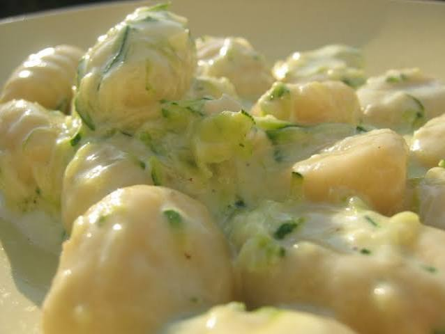

Back to Odin Recipe
Don't be afraid of brocolli. This is a delicious, cheesy dish. Low in effort, high in yummines. Cheese lovers can add parmesan to cheese it up, while a green salad served along the dish cuts through the heaviness andadds refreshing notes to the course.

- Prep time: Not a lot
- Cook time: 15-20 min
Ingredients
- 500g gnocci
- 1 brocolli
- 200 ml heavy cream
- 100 ml milk
- 150g shredded cheese (gouda, mozarella, etc)
- 2 cloves of garlic
- 2 spoons of olive oil
- salt and pepper
Instructions
- Wash and cut brocolli. Boil it for 3-4 minutes in salted water, then drain it.
- Briefly boil gnocci according to the packaging instructions.
- Heat up the olive oil. Add garlic. After a while, mix in heavy cream and milk. Cook for 2-3 minutes until it binds.
- Preheat the oven to 200C. Put in a large container gnocci and the sauce. Mix well, then cover with cheese.
- Cook for 15-20 minutes, until the cheese melts and gnocci turn golden. Serve with a salad.